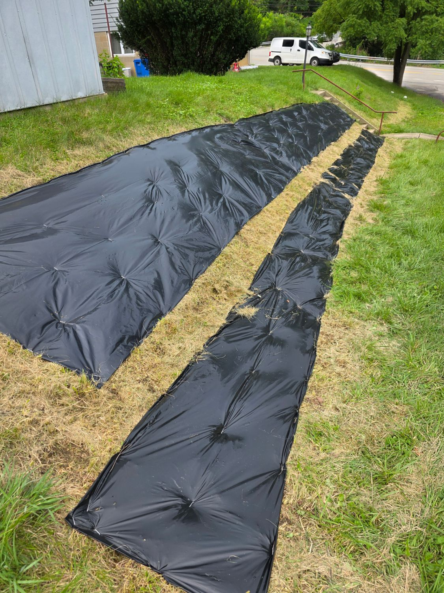

Schematic of the west-slope layout — the fall line runs from the road edge down to the toe, and
water is stopped at each 12″ grass contour band (the green strips). Blocks are planting beds, sized by
measured bed area and colored by flower color; hover or tap for the species. Source: gardenmap.md.
Green strips = 12″ grass contour bands (road, mid, toe) — a staple-anchored erosion scaffold, left standing until the meadow's roots take over, then removed.
Beds are seeded short-in-front (road side) to tall-in-back (toe side). Hatched area = juglone zone around the black-walnut corner; every species there is juglone-tolerant. Dashed outline = butterfly territory (both monarch hosts + the black-swallowtail host).

2026-07-18 — north half tarped down. The butterfly-zone
beds under opaque-plastic occultation to kill the sod and surface weed seedbank, with the scalped
grass contour band left between the strips. Staple-anchored on a staggered grid (a 45° grade rolls
weights); the tarp stays on until fall sow day. The south half is still to be scalped.